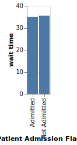
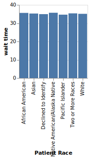
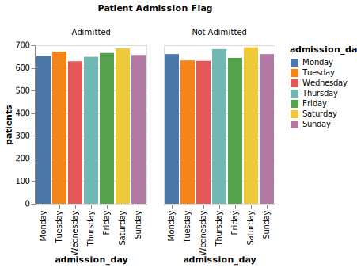
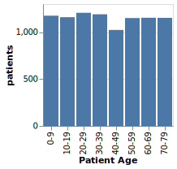
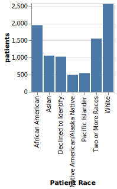
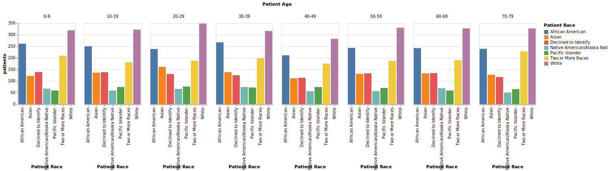

Summary the measure patients
Goal Charts
Chart 4
3 insights
Chart 5
3 insights
Chart 6
7 insights
Chart 0
3 insights
Chart 15
New View
5 insights

Chart 16
New View
5 insights
Goal Insights
Exceptional High Values: General Practice
General Practice demonstrates exceptionally high patients values, representing a significant positive outlier that stands apart from typical patterns.
Undestanding the relationship between Patient Waittime and Patient Satisfaction Score
Goal Charts
Chart 2
3 insights
Chart 3
3 insights

Chart 28
New View
3 insights
Chart 29
New View
3 insights
Chart 30
New View
5 insights
Chart 31
New View
5 insights

Chart 32
New View
5 insights
Chart 33
New View
5 insights
Chart 34
New View
5 insights
Chart 35
New View
5 insights
Goal Insights
Inverse Performance Pattern: Not Adimitted
Not Adimitted shows an inverse relationship between wait time and score: high in wait time but low in score, indicating these measures capture different aspects of performance.
Inverse Performance Pattern: Adimitted
Adimitted shows an inverse relationship between wait time and score: low in wait time but high in score, indicating these measures capture different aspects of performance.
Relationship between wait time and score
wait time and score show no linear correlation (r=-0.02).
Compare the categories of Patient Admission Flag and admission_day for patients
Goal Charts
Chart 4
3 insights
Chart 10
5 insights
Chart 7
4 insights
Chart 669
New View
3 insights
Chart 670
New View
3 insights

Chart 671
New View
8 insights
Goal Insights
Exceptional Dimensional Behavior: Adimitted
Adimitted demonstrates exceptional behavior in the dimensional interaction between Patient Admission Flag and admission_day, standing out from typical interaction patterns.
Compare the categories of Patient Race and Patient Age for patients
Goal Charts
Chart 8
8 insights

Chart 9
6 insights

Chart 1296
New View
5 insights
Chart 1297
New View
8 insights

Chart 1298
New View
9 insights
Chart 1299
New View
7 insights
Goal Insights
Exceptional Dimensional Behavior: White
White demonstrates exceptional behavior in the dimensional interaction between Patient Race and Patient Age, standing out from typical interaction patterns.
Consistent Multi-Dimensional Performance: White
White demonstrates consistent high patients value across multiple combinations of Patient Race and Patient Age.